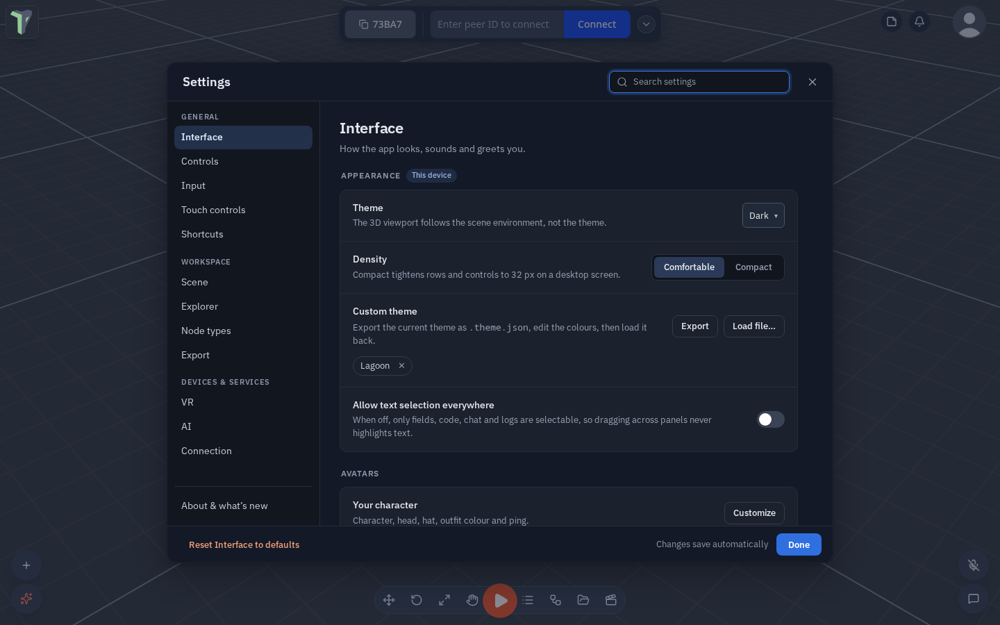
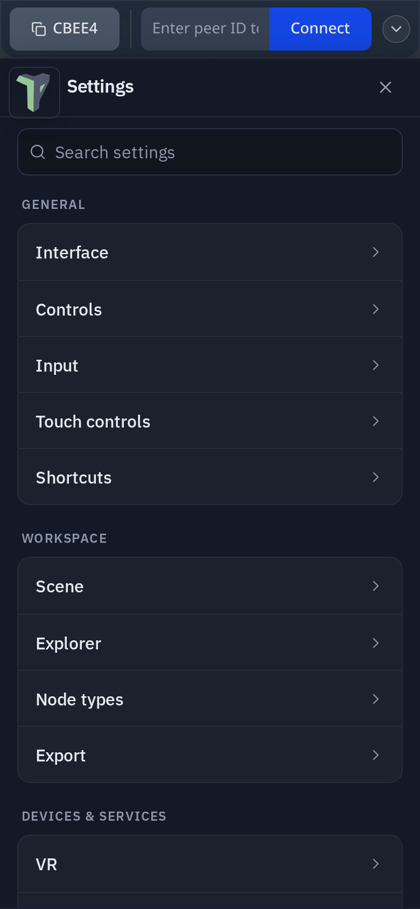
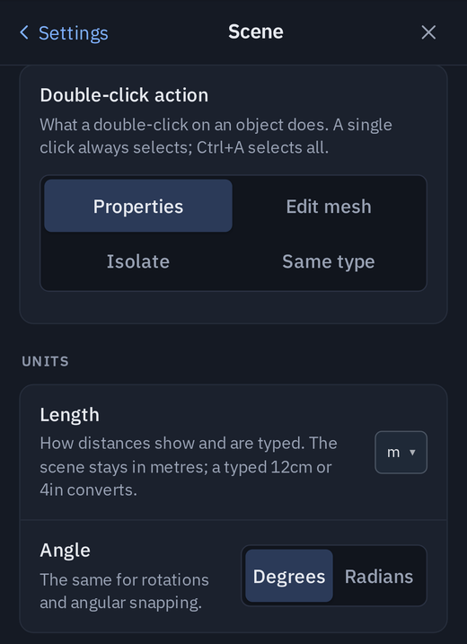

Settings
Settings holds everything that is yours to set: how the app looks, your keys and controllers, the scene defaults, VR, AI and the connection. Open it from the logo menu ▸ Settings, or follow a link that names a page — the Connect drawer's Connection settings, the HUD's AI button, a VR edit-limit toast — and it opens on that page.
Since 1.35 Settings opens beside your work: an open sidebar, the docked windows and the Node editor stay where they are on a computer and an unfolded phone. On a folded phone Settings is a full-screen sheet, and the dock comes back when you close it.
Since 1.26 Settings has a new layout. No setting was lost or changed meaning: every switch keeps the value it had.

Finding your way
-
On a computer the window has a menu on the left in three groups, with About & what's new pinned at the bottom:
Group Categories General Interface, Accessibility, Controls, Input, Touch controls, Shortcuts Workspace Scene, Explorer, Node types, Export Devices & services VR, AI, Connection, Privacy A dot on About & what's new means there is an update you have not read. ↑ / ↓ walk the menu.
-
On a phone Settings opens on the list of categories. Tap one to open it; ‹ Settings goes back.
-
Sub-pages. Some rows open a page of their own instead of a pop-up: VR ▸ Remap buttons, a touch button's look (Touch controls ▸ Jump), an AI provider, the voice-typing server, a custom signaling server, a node group (Node types ▸ Physics), About ▸ What's new. A breadcrumb (VR › Remap buttons) or ‹ Back returns, and Esc backs out of a sub-page first.

Search
The search box sits in the header (on a phone, at the top of the list). It finds a setting by its name, its description or the words people use for it — dark finds Theme, southpaw finds Swap sticks. Each match shows where it lives (INTERFACE › APPEARANCE); click a setting's name to jump to it on its page. Esc clears the search, a second Esc closes Settings.
Reading a row
Every setting is one row: its name and a one-line description on the left, the control on the right. Switches are on / off; two to four choices are a segmented control; a value with a range is a slider with its number beside it.
Since 1.32 each row decides its own layout from the room it really has in the Settings window, not from the size of the screen. A small control — a switch, a colour swatch, a key box, a short dropdown, a single button, a number, a segmented choice that fits — stays on the same line as its name. Only a control that cannot fit beside the name and its description — a wide segmented choice, a text field, a slider on a narrow phone — moves onto its own line underneath. So the same row can sit on one line on an unfolded phone or a computer and stack on a folded phone. A segmented choice too wide even for its own line (Scene ▸ Editing ▸ Double-click action on a phone) shows its options in two columns.

| Badge | Means |
|---|---|
| This device | the setting is kept only on this computer or headset |
| Shared | other people see its effect — your ping colour and sound, your VR hands, shared materials |
Saving and resetting
Changes save as you make them — there is no Save button; Done closes the window.
- Reset ‹Category› to defaults — bottom left on a computer, at the end of the page on a phone — puts every setting on that page back, after asking. There is no undo for it. It never touches your work: the AI page keeps your saved providers and keys, the Interface page keeps the themes you loaded.
- About ▸ Danger zone holds the two big ones, each asking first:
- Clear saved session — the autosaved copy of your work (see Autosave).
- Reset all settings — every setting on this device, in every category at once. A toast then offers Undo for about 8 seconds (see Undo after Clear, Delete, Remove).
Third-party licences
New in 1.39. Settings ▸ About ▸ Third-party licences opens a page listing every open-source library the app is built with, its licence and a link to its source, with the full licence text under each one. The page is generated when the app is built, so it always matches the version you are running; an exported game carries it too. The HEIC / HEIF photo decoder (libheif-js) is LGPL-3.0: it ships unmodified as its own file, loaded only when such a photo is opened.
Density
Settings ▸ Interface ▸ Density chooses how tightly the interface is packed:
- Comfortable (the default).
- Compact — tighter 32 px rows and controls on a computer screen. Phones keep finger-sized targets.
Downloads kept on this device
New in 1.44. Pack files, skies, converted textures (the optimized copy of an imported model) and files from the CC0 browser are kept in the browser's private file storage, once per content. The next time a scene needs them they load from the device — faster, and without the network.
Where: Settings ▸ Storage:
- Cached downloads — how much is kept, split into packs / skies / converted textures / downloads, and Clear.
- Cache size limit — 256 MB, 512 MB, 1 GB (default) or 2 GB. Past the limit, the files used longest ago go first.
- Keep on this device — whether the browser has agreed to keep this storage when it runs short of space, with Ask the browser.
- Storage breakdown — everything the app keeps (the same window as Explorer ▸ Disk), with pack downloads per pack and the cached kinds under Cached downloads, each with a tick to reclaim it.
The first time something is cached, a notice explains why and offers Keep them (asks the browser to keep the storage) or Not now — asked once, never again; the Settings row can ask later. The app itself (its code and pages) is never kept here, so updates always arrive on the next load. Where the browser has no private file storage the cache uses the older Cache Storage, and where neither exists everything downloads each time, as before.
Where things moved
| Setting | Was | Now |
|---|---|---|
| What's new | the bottom of the window | About ▸ What's new |
| Reset settings | the bottom of the window | About ▸ Danger zone ▸ Reset all settings |
| Clear saved session | the bottom of the window | About ▸ Danger zone ▸ Clear saved session |
| Workspace layouts | new | Interface ▸ Windows & chrome ▸ Workspace layouts — see Workspace layouts |
| Knocked-off idle | new | Interface ▸ Avatars ▸ Knocked-off idle — see Knocked-off idle |
| Density | new | Interface ▸ Density — see above |
| Sky image quality | new in 1.27 | Scene ▸ Performance ▸ Sky image quality — Auto / Full (1k) / Low (headset), this device only; see Sky image quality |
| World grab snapping | new in 1.28 | VR ▸ Controls ▸ World grab snapping — on by default, this device only; see Snapping the world while you grab it |
| Placement preview | new in 1.31 | Scene ▸ Performance ▸ Placement preview — Full model / Within budget / Box only, plus the preview triangle budget and Show dimensions, this device only; see The Placement preview setting |
| Undock button | new in 1.32 | Interface ▸ Windows & chrome ▸ Undock button — Active window / All as one tabbed group, this device only; see Docked windows |
| Project actions | new in 1.32 | Interface ▸ Lists & menus ▸ Project actions — Auto / Compact / List, this device only: how the main menu lays out New from template, Load, Save, Import and Export; Auto is List on a phone and Compact elsewhere. See The main menu's Project actions |
| Sticky panel headers | new in 1.33 | Interface ▸ Windows & chrome ▸ Sticky panel headers — keeps the Properties and Configure Scene headers on top while you scroll, or lets them scroll away; both panels at once (mixed while they differ), this device only. See Panel headers |
| Lift corner buttons above docked panels | new in 1.33 | Interface ▸ Windows & chrome ▸ Lift corner buttons above docked panels — off by default, beside Lift toolbar above docked panels; this device only. See The toolbar |
| Selection toolbar · Dock tab row · Grab handle | new in 1.33 | Interface — the phone's Show switches, all on by default, this device only; also at the bottom of More on a phone. See The phone bar and More |
| Distant scatter | new in 1.43 | Scene ▸ Performance ▸ Distant scatter — Auto / Headset / Phone / Desktop / All, this device only: far scattered models fade out to stay inside the device's budget; nearby instances and colliders never thin. See Distant scatter |
| GPU fluid | new in 1.40 | Scene ▸ Performance ▸ GPU fluid — Auto / Off, this device only; Auto runs fluid tanks on the graphics card only where a one-time measurement says it is clearly faster, with Measure again. See GPU fluid |
| Quality preset | new in 1.33 | Scene ▸ Performance ▸ Quality preset — Auto / High / Medium / Low, this device only; the same as Configure Scene ▸ Quality ▸ Preset. See The Quality preset |
| Reset tips | new in 1.34 | Interface ▸ Reset tips — brings back tips that have gone away — on a phone, the Hold and drag items to or from the bar line at the bottom of More, which hides itself once you have arranged the bar. See The phone bar and More |
| Show / hide left sidebar · Show / hide right sidebar | new in 1.35 | Shortcuts ▸ Panels — Ctrl+B and Ctrl+Alt+B (⌘ on a Mac), rebindable like any shortcut; hiding keeps every tab open. See Sidebars |
| Viewport picture-in-picture | new in 1.34 | Shortcuts ▸ Viewport picture-in-picture — the keys of the small 3D view shown while a docked window is maximized (W / E / R, F), rebindable like any shortcut. See The viewport picture-in-picture |
| Import | new in 1.37 | Import ▸ Import defaults — optimize big models automatically, the triangle and texture thresholds, max texture size, KTX2 compression and the LOD levels, this device only. See Importing Big Models |
| Optimize for | new in 1.37 | Export ▸ Optimize for — Full quality / For Quest / web (replaces the Compress textures — not in this release row), this device only; the same as Save options ▸ Optimize for. See Optimize for Quest / web |
| Send anonymous error reports | new in 1.39 | Privacy ▸ Send anonymous error reports — on by default; see Privacy & Error Reports |
| Third-party licences | new in 1.39 | About ▸ Third-party licences — see above |